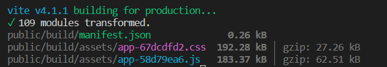

Laravel is a popular PHP framework for creating web applications. It is written in PHP and adheres to the Model-View-Controller (MVC) architectural paradigm. Frameworks are the greatest friends for techies like you, therefore in the next minutes, you will learn how to get started with Laravel, bootstrap it with Bootstrap a popular CSS framework, connect it to a database, and help you to a base create a Web Application to help you to save day-to-day work on the server.
PHP is a popular open-source programming language that is ideal for web development. Taylor Otwell invented Laravel, a free, open-source PHP web framework designed for the building of web applications using the model-view-controller (MVC) architectural paradigm. Laravel is widely regarded as one of the most popular PHP frameworks.
To get started with Laravel and bootstrap it with Bootstrap, we need to follow certain steps. These steps include installing Laravel, installing Bootstrap, connecting to the database, creating a model, migration, and controller for the Application.
Install Laravel and Prerequisites To install Laravel, you will need to have PHP, Composer, and a web server (such as Apache or Nginx) installed on your machine.
PHP can be downloaded from the official website (https://windows.php.net/download/) and installed on your machine. Make sure to select the correct version for your operating system and architecture.
Composer is a dependency manager for PHP. It can be downloaded from the official website (https://getcomposer.org/download/) and installed on your machine.
You will also need a web server such as Apache or Nginx. These can be downloaded and installed from their respective websites (https://httpd.apache.org/download.cgi and https://nginx.org/en/download.html) These Steps can be followed if you want to tackle each Prerequisites and get more grip on them or if you want to start immediately then you can download the XAMPP it is software which consist of all the required tools to getting started with PHP development you can download it from here XAMPP-Download. XAMPP consists of Apace server and PHP and MySQL, and install and start the server, you can download the Composer from the above step 2 Once you have these prerequisites installed, you can install Laravel using the following command in your terminal or command prompt:
composer create-project laravel/laravel example-appThis command will create a new Laravel project in a directory called "example-app". After the project has been created, start Laravel's local development server using the Laravel's Artisan CLI serve command:
cd example-app cd example-appLaravel's Artisan CLI serve command this command will start a web server on your local host at http://localhost:8000
To install Bootstrap, firstly you should have the NPM installed in your machine it is very simple to install choose an stable build for better understanding then use this command on your application root directory To install the ui packages composer require laravel/ui to install the UI with bootstrap php artisan ui bootstrap the below command is to add an authentication layer instantly to Laravel project php artisan ui bootstrap –auth to add the libraries npm install this below command will give you an single manifest file to include all the CSS and JavaScript libraries npm run build
These commands will install the necessary files for bootstrapping Laravel with bootstrap. You will see a output below
These two files app-67dcdcdfd2.css and app-58d79ea6.js will serve as the main source files for your entire applications
In order to connect to a database, you will need to configure your database settings in the .env file located in the root of your project. You will need to update the following fields:
DB_CONNECTION=mysqlTo create a model that represents the tasks table in the database, you can use the following command:
php artisan make:model Task -mthis command will create a model and migration file for the Task.
To create an API that helps to store day-to-day tasks on the server, you can use the following command:
php artisan make:controller TaskControllerThis command will create a new controller for the Application it will handle all the core components of your application including redirecting , forwarding requests , getting data from the data base and session handling and Validation and more. Now we need to define an route to user to enter our application the default route is /
In order to define routes for the Application , you can add the following code into your file use:
App\Http\Controllers\TaskController Route::get('/’,function(){ return view('welcome’); }); Route::post('/task/,[TaskController::class,'index']);Do not copy paste from this article the quotes and other are encoded differently so it is recommended to write on the own
Now you have a Model, Controller, View and a data base refer the Laravel official documentation for further help Here is a quick guide for those who want to start with it now Show a basic web page to user about your task Add a button called add task to redirect to a page that has a form Add the action to the form (don’t forget @csrf) and take the route to web.php and transfer into the Task Controller In the task controller validate the request and use Laravel DB queries to insert the data Use the same mechanism to update, delete the tasks There you go you have implemented a Full Stack Project
The complete project is added into my github and code is open sourced, for further clarification you can visit the link below Github Repo Link
Now you have a Model, Controller, View and a data base refer the Laravel official documentation for further help Here is a quick guide for those who want to start with it now
The complete project is added into my github and code is open sourced, for further clarification you can visit the link below